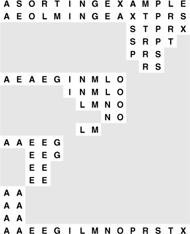
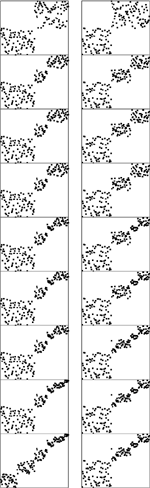

C++ Programming Robert Sedgewick - Princeton University Addison Wesley Professional Algorithms in C++, Parts 1–4: Fundamentals, Data Structure, Sorting, Searching, Third Edition
10.2. Binary Quicksort
Suppose that we can rearrange the records of a file such that all those whose keys begin with a 0 bit come before all those whose keys begin with a 1 bit. Then, we can use a recursive sorting method that is a variant of quicksort (see Chapter 7): Partition the file in this way, then sort the two subfiles independently. To rearrange the file, scan from the left to find a key that starts with a 1 bit, scan from the right to find a key that starts with a 0 bit, exchange, and continue until the scanning pointers cross. This method is often called radix-exchange sort in the literature (including in earlier editions of this book); here, we shall use the name binary quicksort to emphasize that it is a simple variant of the algorithm invented by Hoare, even though it was actually discovered before quicksort was (see reference section).
Program 10.1 is a full implementation of this method. The partitioning process is essentially the same as Program 7.2, except that the number 2b, instead of some key from the file, is used as the partitioning element. Because 2b may not be in the file, there can be no guarantee that an element is put into its final place during partitioning. The algorithm also differs from normal quicksort because the recursive calls are for keys with 1 fewer bit. This difference has important implications for performance. For example, when a degenerate partition occurs for a file of N elements, a recursive call for a subfile of size N will result, for keys with 1 fewer bit. Thus, the number of such calls is limited by the number of bits in the keys. By contrast, consistent use of partitioning values not in the file in a standard quicksort could result in an infinite recursive loop.
As there are with standard quicksort, various options are available in implementing the inner loop. In Program 10.1, tests for whether the pointers have crossed are included in both inner loops. This arrangement results in an extra exchange for the case i = j, which could be avoided with a break, as is done in Program 7.2, although in this case the exchange of a[i] with itself is harmless. Another alternative is to use sentinel keys.
Program 10.1. Binary quicksort|
This Program partitions a file on the leading bits of the keys, and then sorts the subfiles recursively. The variable d keeps track of the bit being examined, starting at 0 (leftmost). The partitioning stops with j equal to i, and all elements to the right of a[i] having 1 bits in the dth position and all elements to the left of a[i] having 0 bits in the dth position. The element a[i] itself will have a 1 bit unless all keys in the file have a 0 in position d. An extra test just after the partitioning loop covers this case.
template <class Item>
void quicksortB(Item a[], int l, int r, int d)
{ int i = l, j = r;
if (r <= l || d > bitsword) return;
while (j != i)
{
while (digit(a[i], d) == 0 && (i < j)) i++;
while (digit(a[j], d) == 1 && (j > i)) j--;
exch(a[i], a[j]);
}
if (digit(a[r], d) == 0) j++;
quicksortB(a, l, j-1, d+1);
quicksortB(a, j, r, d+1);
}
template <class Item>
void sort(Item a[], int l, int r)
{ quicksortB(a, l, r, 0); }
|
Figure 10.2 depicts the operation of Program 10.1 on a small sample file, for comparison with Figure 7.1 for quicksort. This figure shows what the data movement is, but not why the various moves are made—that depends on the binary representation of the keys. A more detailed view for the same example is given in Figure 10.3. This example assumes that the letters are encoded with a simple 5-bit code, with the ith letter of the alphabet represented by the binary representation of the number i. This encoding is a simplified version of real character codes, which use more bits (7, 8, or even 16) to represent more characters (uppercase or lowercase letters, numbers, and special symbols).
Partitioning on the leading bit does not guarantee that one value will be put into place; it guarantees only that all keys with leading 0 bits come before all keys with leading 1 bits. We can compare this diagram with Figure 7.1 for quicksort, although the operation of the partitioning method is completely opaque without the binary representation of the keys. Figure 10.3 gives the details that explain the partition positions precisely.

We derive this figure from Figure 10.2 by translating the keys to their binary encoding, compressing the table such that the independent subfile sorts are shown as though they happen in parallel, and transposing rows and columns. The first stage splits the file into a subfile with all keys beginning with 0, and a subfile with all keys beginning with 1. Then, the first subfile is split into one subfile with all keys beginning with 00, and another with all keys beginning with 01; independently, at some other time, the other subfile is split into one subfile with all keys beginning with 10, and another with all keys beginning with 11. The process stops when the bits are exhausted (for duplicate keys, in this example) or the subfiles are of size 1.
For full-word keys consisting of random bits, the starting point in Program 10.1 should be the leftmost bit of the words, or bit 0. In general, the starting point that should be used depends in a straightforward way on the application, on the number of bits per word in the machine, and on the machine representation of integers and negative numbers. For the one-letter 5-bit keys in Figures 10.2 and 10.3, the starting point on a 32-bit machine would be bit 27.
This example highlights a potential problem with binary quicksort in practical situations: Degenerate partitions (partitions with all keys having the same value for the bit being used) can happen frequently. It is not uncommon to sort small numbers (with many leading zeros) as in our examples. The problem also occurs in keys comprising characters: for example, suppose that we make up 32-bit keys from four characters by encoding each in a standard 8-bit code and then putting them together. Then, degenerate partitions are likely to occur at the beginning of each character position, because, for example, lowercase letters all begin with the same bits in most character codes. This problem is typical of the effects that we need to address when sorting encoded data, and similar problems arise in other radix sorts.
Once a key is distinguished from all the other keys by its left bits, no further bits are examined. This property is a distinct advantage in some situations; it is a disadvantage in others. When the keys are truly random bits, only about lg N bits per key are examined, and that could be many fewer than the number of bits in the keys. This fact is discussed in Section 10.6; see also Exercise 10.5 and Figure 10.1. For example, sorting a file of 1000 records with random keys might involve examining only about 10 or 11 bits from each key (even if the keys are, say, 64-bit keys). On the other hand, all the bits of equal keys are examined. Radix sorting simply does not work well on files that contain huge numbers of duplicate keys that are not short. Binary quicksort and the standard method are both fast if keys to be sorted comprise truly random bits (the difference between them is primarily determined by the difference in cost between the bit-extraction and comparison operations), but the standard quicksort algorithm can adapt better to nonrandom sets of keys, and 3-way quicksort is ideal when duplicate keys predominate.
As it was with quicksort, it is convenient to describe the partitioning structure with a binary tree (as depicted in Figure 10.4): The root corresponds to a subfile to be sorted, and its two subtrees correspond to the two subfiles after partitioning. In standard quicksort, we know that at least one record is put into position by the partitioning process, so we put that key into the root node; in binary quicksort, we know that keys are in position only when we get to a subfile of size 1 or we have exhausted the bits in the keys, so we put the keys at the bottom of the tree. Such a structure is called a binary trie—properties of tries are covered in detail in Chapter 15. For example, one important property of interest is that the structure of the trie is completely determined by the key values, rather than by their order.
This tree describes the partitioning structure for binary quicksort, corresponding to Figures 10.2 and 10.3. Because no item is necessarily put into position, the keys correspond to external nodes in the tree. The structure has the following property: Following the path from the root to any key, taking 0 for left branches and 1 for right branches, gives the leading bits of the key. These are precisely the bits that distinguish the key from other keys during the sort. The small black squares represent the null partitions (when all the keys go to the other side because their leading bits are the same). This happens only near the bottom of the tree in this example, but could happen higher up in the tree: For example, if I or X were not among the keys, their node would be replaced by a null node in this drawing. Note that duplicated keys (A and E) cannot be partitioned (the sort puts them in the same subfile only after all their bits are exhausted).
Partitioning divisions in binary quicksort depend on the binary representation of the range and number of items being sorted. For example, if the files are random permutations of the integers less than 171 = 101010112, then partitioning on the first bit is equivalent to partitioning about the value 128, so the subfiles are unequal (one of size 128 and the other of size 43). The keys in Figure 10.5 are random 8-bit values, so this effect is absent there, but the effect is worthy of note now, lest it come as a surprise when we encounter it in practice.
Partitioning divisions in binary quicksort are less sensitive to key order than they are in standard quicksort. Here, two different random 8-bit files lead to virtually identical partitioning profiles.

We can improve the basic recursive implementation in Program 10.1 by removing recursion and treating small subfiles differently, just as we did for standard quicksort in Chapter 7.
Exercises |  10.8 Draw the trie in the style of Figure 10.2 that corresponds to the partitioning process in radix quicksort for the key E A S Y Q U E S T I O N. 10.8 Draw the trie in the style of Figure 10.2 that corresponds to the partitioning process in radix quicksort for the key E A S Y Q U E S T I O N.
| | 10.9 Compare the number of exchanges used by binary quicksort with the number used by the normal quicksort for the file of 3-bit binary numbers 001, 011, 101, 110, 000, 001, 010, 111, 110, 010. | |  10.10 Why is it not as important to sort the smaller of the two subfiles first in binary quicksort as it was for normal quicksort? 10.10 Why is it not as important to sort the smaller of the two subfiles first in binary quicksort as it was for normal quicksort?
| | 10.11 Describe what happens on the second level of partitioning (when the left subfile is partitioned and when the right subfile is partitioned) when we use binary quicksort to sort a random permutation of the nonnegative integers less than 171. | | 10.12 Write a program that, in one preprocessing pass, identifies the number of leading bit positions where all keys are equal, then calls a binary quicksort that is modified to ignore those bit positions. Compare the running time of your program with that of the standard implementation for N = 103, 104, 105, and 106 when the input is 32-bit words of the following format: The rightmost 16 bits are uniformly random, and the leftmost 16 bits are all 0 except with a 1 in position i if there are i 1s in the right half. | | 10.13 Modify binary quicksort to check explicitly for the case that all keys are equal. Compare the running time of your program with that of the standard implementation for N = 103, 104, 105, and 106 with the input described in Exercise 10.12. |
|